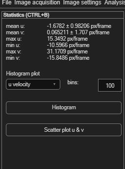

Statistics
A quick numeric and visual summary of the current frame's velocity data — useful for sanity-checking results and spotting data-quality problems.
Open via Statistics → Statistics (Ctrl+B).

At-a-glance values
The panel displays mean u, mean v, max u, min u, max v and min v for the current frame, updating automatically as you move between frames.
Histogram
Choose what to plot from Histogram plot: u velocity, v velocity, velocity magnitude, or sub-pixels. Set the number of bins (default 100), then click Histogram.
Use the sub-pixel histogram to check for peak locking
A histogram of sub-pixel displacements that clusters near whole-pixel values (0, 1, 2, …)
instead of spreading smoothly indicates peak locking — a well-known PIV bias. If
you see this, revisit your sub-pixel estimator or image quality.
Scatter plot
Click Scatter plot u & v to plot every vector's u component against its v component — the same kind of plot used to set velocity limits, but here purely for inspection.